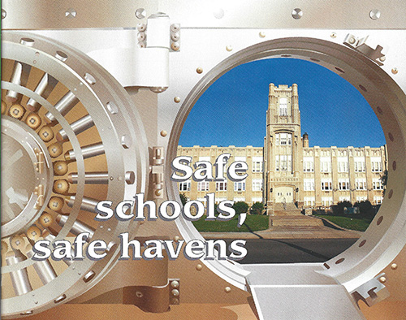

Illustrations

Student project using only typography where the symbol is the hero. This is an exapmle of my photoshop skills.

Professional project for The Restaurant Store. This illustration was used in promotional materials for the grill. The image was created in Illustrator.

Professional project for The PA School Boards Association. This image was on the cover of their quarterly magazine. I created the safe in illustrator.
Student project to take an ordinary object and remake it in Illustrator.

Professional project to create a logo for the annual golf outing. I designed the golf logo and merged it with the Cooper Booth logo.
Student project to take a technical item and create it in Illustrator.